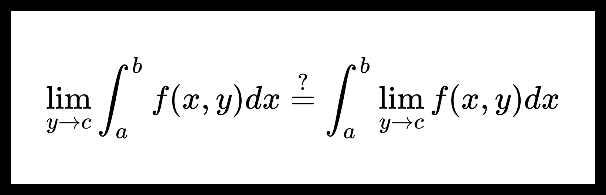

Предельный переход под знаком собственного интеграла. Непрерывность собственных интегралов с параметрами.
Критерий интегрируемости функции.
Вспомним теорему из 1 семестра мат. анализа.
Теорема. Критерий интегрируемости функции по Риману.
Функция f ( x ) f(x) f ( x ) [ a , b ] [a, b] [ a , b ] ∀ ε > 0 ∃ δ > 0 {\forall \varepsilon > 0} \ \ {\exists \delta > 0} ∀ ε > 0 ∃ δ > 0 τ \tau τ [ a , b ] [a, b] [ a , b ] d ( τ ) < ε d(\tau) < \varepsilon d ( τ ) < ε
∑ n = 0 N ( τ ) ω n , τ Δ x n τ < ε , \sum_{n=0}^{N(\tau)} \omega_{n,\tau} \Delta x^{\tau}_n < \varepsilon,
n = 0 ∑ N ( τ ) ω n , τ Δ x n τ < ε ,
где N ( τ ) N(\tau) N ( τ ) x n τ x^{\tau}_n x n τ a = x 0 τ < x 1 τ < ⋯ < x N ( τ ) τ = b a = x^{\tau}_0 < x^{\tau}_1 < \dots < x^{\tau}_{N(\tau)} = b a = x 0 τ < x 1 τ < ⋯ < x N ( τ ) τ = b Δ x n τ = x n τ − x n − 1 τ \Delta x^{\tau}_n = x^{\tau}_n - x^{\tau}_{n-1} Δ x n τ = x n τ − x n − 1 τ n n n d ( τ ) = max Δ x n τ d(\tau) = \max \Delta x^{\tau}_n d ( τ ) = max Δ x n τ τ \tau τ
ω n , τ = sup x ′ , x ′ ′ ∈ [ x n − 1 τ , x n τ ] ∣ f ( x ′ ) − f ( x ′ ′ ) ∣ . \omega_{n, \tau} = \sup_{x^{\prime}, x^{\prime \prime} \in [x^{\tau}_{n-1}, x^{\tau}_n]} | f(x^{\prime}) - f(x^{\prime \prime}) |.
ω n , τ = x ′ , x ′′ ∈ [ x n − 1 τ , x n τ ] sup ∣ f ( x ′ ) − f ( x ′′ ) ∣.
Предельный переход под знаком собственного интеграла.
Теорема. О предельном переходе под знаком собственного интеграла.
Пусть f ( x , y ) : [ a , b ] × E → R {f(x, y) : [a, b] \times E \to \mathbb{R}} f ( x , y ) : [ a , b ] × E → R E ⊆ R s E \subseteq \mathbb{R}^s E ⊆ R s
∀ y ∈ E {\forall y \in E} ∀ y ∈ E f ( x , y ) f(x, y) f ( x , y ) [ a , b ] [a, b] [ a , b ]
f ( x , y ) ⇉ y → c x ∈ [ a , b ] φ ( x ) f(x, y) \overset{x \in [a, b]}{\underset{y \to c}{\rightrightarrows }} \varphi(x) f ( x , y ) y → c ⇉ x ∈ [ a , b ] φ ( x )
Тогда функция φ ( x ) \varphi(x) φ ( x ) [ a , b ] [a, b] [ a , b ]
lim y → c ∫ a b f ( x , y ) d x = ∫ a b φ ( x ) d x . (1) \lim_{y \to c} \int_{a}^{b} f(x, y) dx = \int_{a}^{b} \varphi(x) dx. \tag{1}
y → c lim ∫ a b f ( x , y ) d x = ∫ a b φ ( x ) d x . ( 1 )
Доказательство:
Шаг 1. Докажем, что φ ( x ) \varphi(x) φ ( x ) [ a , b ] [a, b] [ a , b ]
Для этого покажем, что для φ ( x ) \varphi(x) φ ( x )
Пусть τ \tau τ [ a , b ] [a, b] [ a , b ]
Выберем произвольные x ′ , x ′ ′ ∈ [ a , b ] {x^{\prime}, x^{\prime \prime} \in [a, b]} x ′ , x ′′ ∈ [ a , b ] y ∈ E {y \in E} y ∈ E
∣ φ ( x ′ ) − φ ( x ′ ′ ) ∣ ≤ ∣ φ ( x ′ ) − f ( x ′ , y ) ∣ + ∣ φ ( x ′ ′ ) − f ( x ′ ′ , y ) ∣ + | \varphi(x^{\prime}) - \varphi(x^{\prime \prime}) | \le | \varphi(x^{\prime}) - f(x^{\prime}, y) | + | \varphi(x^{\prime \prime}) - f(x^{\prime \prime}, y) | +
∣ φ ( x ′ ) − φ ( x ′′ ) ∣ ≤ ∣ φ ( x ′ ) − f ( x ′ , y ) ∣ + ∣ φ ( x ′′ ) − f ( x ′′ , y ) ∣ +
+ ∣ f ( x ′ , y ) − f ( x ′ ′ , y ) ∣ + | f(x^{\prime}, y) - f(x^{\prime \prime}, y) |
+ ∣ f ( x ′ , y ) − f ( x ′′ , y ) ∣
Из этой оценки можем получить следующее:
∑ n = 0 N ( τ ) ω n , τ φ Δ x n ≤ ∑ n = 0 N ( τ ) ω n , τ f Δ x n + 2 sup x ∈ [ a , b ] ∣ φ ( x ) − f ( x , y ) ∣ ∑ n = 0 N ( τ ) Δ x n ⏟ b − a , (2) \sum_{n=0}^{N(\tau)} \omega^{\varphi}_{n, \tau} \Delta x_n \le \sum_{n=0}^{N(\tau)} \omega^{f}_{n, \tau} \Delta x_n + 2 \sup_{x \in [a, b]} \left| \varphi(x) - f(x, y) \right| \underbrace{\sum_{n=0}^{N(\tau)} \Delta x_n}_{b-a}, \tag{2}
n = 0 ∑ N ( τ ) ω n , τ φ Δ x n ≤ n = 0 ∑ N ( τ ) ω n , τ f Δ x n + 2 x ∈ [ a , b ] sup ∣ φ ( x ) − f ( x , y ) ∣ b − a n = 0 ∑ N ( τ ) Δ x n , ( 2 )
где
ω n , τ φ = sup x ′ , x ′ ′ ∈ [ x n − 1 τ , x n τ ] ∣ φ ( x ′ ) − φ ( x ′ ′ ) ∣ , \omega_{n, \tau}^{\varphi} = \sup_{x^{\prime}, x^{\prime \prime} \in [x^{\tau}_{n-1}, x^{\tau}_n]} | \varphi(x^{\prime}) - \varphi(x^{\prime \prime}) |,
ω n , τ φ = x ′ , x ′′ ∈ [ x n − 1 τ , x n τ ] sup ∣ φ ( x ′ ) − φ ( x ′′ ) ∣ ,
ω n , τ f = sup x ′ , x ′ ′ ∈ [ x n − 1 τ , x n τ ] ∣ f ( x ′ , y ) − f ( x ′ ′ , y ) ∣ . \omega_{n, \tau}^{f} = \sup_{x^{\prime}, x^{\prime \prime} \in [x^{\tau}_{n-1}, x^{\tau}_n]} | f(x^{\prime}, y) - f(x^{\prime \prime}, y) |.
ω n , τ f = x ′ , x ′′ ∈ [ x n − 1 τ , x n τ ] sup ∣ f ( x ′ , y ) − f ( x ′′ , y ) ∣.
Выберем ε > 0 \boxed{\varepsilon > 0} ε > 0
Из условия 2 2 2 ∃ U ∘ c {\exists \overset{\circ}{U}_c} ∃ U ∘ c ∀ y ∈ U ∘ c ∩ E {\forall y \in \overset{\circ}{U}_c \cap E } ∀ y ∈ U ∘ c ∩ E
sup x ∈ [ a , b ] ∣ φ ( x ) − f ( x , y ) ∣ < ε 3 ( b − a ) . \sup_{x \in [a, b]} \left| \varphi(x) - f(x, y) \right| < \frac{\varepsilon}{3 (b - a)}.
x ∈ [ a , b ] sup ∣ φ ( x ) − f ( x , y ) ∣ < 3 ( b − a ) ε .
Также из условия 1 1 1 f ( x , y ) f(x, y) f ( x , y ) ∃ δ > 0 \boxed{\exists \delta > 0} ∃ δ > 0 ∀ τ \boxed{\forall \tau} ∀ τ d ( τ ) < δ \boxed{d(\tau) < \delta} d ( τ ) < δ
∑ n = 0 N ( τ ) ω n , τ f Δ x n < ε 3 . \sum_{n=0}^{N(\tau)} \omega^{f}_{n, \tau} \Delta x_n < \frac{\varepsilon}{3}.
n = 0 ∑ N ( τ ) ω n , τ f Δ x n < 3 ε .
Из неравенства ( 2 ) (2) ( 2 )
∑ n = 0 N ( τ ) ω n , τ φ Δ x n < ε 3 + 2 ε 3 ( b − a ) ( b − a ) = ε . \sum_{n=0}^{N(\tau)} \omega^{\varphi}_{n, \tau} \Delta x_n < \frac{\varepsilon}{3} + \frac{2 \varepsilon}{3 (b - a)} (b - a) = \varepsilon.
n = 0 ∑ N ( τ ) ω n , τ φ Δ x n < 3 ε + 3 ( b − a ) 2 ε ( b − a ) = ε .
Получим
∑ n = 0 N ( τ ) ω n , τ φ Δ x n < ε . \boxed{\sum_{n=0}^{N(\tau)} \omega^{\varphi}_{n, \tau} \Delta x_n < \varepsilon} \ .
n = 0 ∑ N ( τ ) ω n , τ φ Δ x n < ε .
Шаг 2. Докажем существование предела ( 1 ) (1) ( 1 )
В шаге 1 1 1 ∫ a b φ ( x ) d x \int_a^b \varphi(x) dx ∫ a b φ ( x ) d x ∀ y ∈ E \forall y \in E ∀ y ∈ E
0 ≤ ∣ ∫ a b f ( x , y ) d x − ∫ a b φ ( x ) d x ∣ ≤ ∫ a b ∣ f ( x , y ) − φ ( x ) ∣ d x ≤ 0 \le \left| \int_a^b f(x, y) dx - \int_a^b \varphi(x) dx \right| \le \int_a^b \left| f(x, y) - \varphi(x) \right| dx \le
0 ≤ ∫ a b f ( x , y ) d x − ∫ a b φ ( x ) d x ≤ ∫ a b ∣ f ( x , y ) − φ ( x ) ∣ d x ≤
= ∫ a b sup x ∈ [ a , b ] ∣ f ( x , y ) − φ ( x ) ∣ d x = ( b − a ) sup x ∈ [ a , b ] ∣ f ( x , y ) − φ ( x ) ∣ = \int_a^b \sup_{x \in [a, b]} \left| f(x, y) - \varphi(x) \right| dx = (b - a) \sup_{x \in [a, b]} \left| f(x, y) - \varphi(x) \right|
= ∫ a b x ∈ [ a , b ] sup ∣ f ( x , y ) − φ ( x ) ∣ d x = ( b − a ) x ∈ [ a , b ] sup ∣ f ( x , y ) − φ ( x ) ∣
Из условия 2 2 2
∃ lim y → c sup x ∈ [ a , b ] ∣ f ( x , y ) − φ ( x ) ∣ = 0 , \exists \lim_{y \to c} \sup_{x \in [a, b]} \left| f(x, y) - \varphi(x) \right| = 0,
∃ y → c lim x ∈ [ a , b ] sup ∣ f ( x , y ) − φ ( x ) ∣ = 0 ,
поэтому
∃ lim y → c ∫ a b f ( x , y ) d x = ∫ a b φ ( x ) d x \exists \lim_{y \to c} \int_a^b f(x, y) dx = \int_a^b \varphi(x) dx
∃ y → c lim ∫ a b f ( x , y ) d x = ∫ a b φ ( x ) d x
Теорема доказана.
Непрерывность собственных интегралов с параметрами.
Теорема. О непрерывности собственных интегралов с параметрами.
Пусть дана функция f ( x , y ) : [ a , b ] × [ c , d ] → R {f(x, y) : [a, b] \times [c, d] \to \mathbb{R}} f ( x , y ) : [ a , b ] × [ c , d ] → R f ( x , y ) f(x, y) f ( x , y ) [ a , b ] × [ c , d ] {[a, b] \times [c, d]} [ a , b ] × [ c , d ]
Тогда функция F ( y ) = ∫ a b f ( x , y ) d x F(y) = \int_a^b f(x, y) dx F ( y ) = ∫ a b f ( x , y ) d x [ c , d ] [c, d] [ c , d ]
Доказательство:
Покажем, что ∀ y 0 ∈ [ c , d ] ∃ lim y → y 0 F ( y ) = F ( y 0 ) . {\forall y_0 \in [c, d]} \ \ {\exists \lim_{y \to y_0} F(y) = F(y_0).} ∀ y 0 ∈ [ c , d ] ∃ lim y → y 0 F ( y ) = F ( y 0 ) .
Пусть y 0 ∈ [ c , d ] y_0 \in [c, d] y 0 ∈ [ c , d ]
Из того, что f ( x , y ) f(x, y) f ( x , y ) [ a , b ] × [ c , d ] {[a, b] \times [c, d]} [ a , b ] × [ c , d ] ∀ y ∈ [ c , d ] {\forall y \in [c, d]} ∀ y ∈ [ c , d ] f ( x , y ) f(x, y) f ( x , y ) x x x [ a , b ] [a, b] [ a , b ]
Поэтому ∀ y ∈ [ c , d ] \forall y \in [c, d] ∀ y ∈ [ c , d ] ∫ a b f ( x , y ) d x \int_a^b f(x, y) dx ∫ a b f ( x , y ) d x
По теореме Кантора о равномерной непрерывности, функция f ( x , y ) f(x, y) f ( x , y ) [ a , b ] × [ c , d ] {[a, b] \times [c, d]} [ a , b ] × [ c , d ]
∀ ε > 0 ∃ δ > 0 ∀ x 1 , x 2 ∈ [ a , b ] ∀ y 1 , y 2 ∈ [ c , d ] \forall \varepsilon > 0 \ \ \exists \delta > 0 \ \ \forall x_1, x_2 \in [a, b] \ \ \forall y_1, y_2 \in [c, d]
∀ ε > 0 ∃ δ > 0 ∀ x 1 , x 2 ∈ [ a , b ] ∀ y 1 , y 2 ∈ [ c , d ]
∣ x 1 − x 2 ∣ < δ , ∣ y 1 − y 2 ∣ < δ ⇒ ∣ f ( x 1 , y 1 ) − f ( x 2 , y 2 ) ∣ < ε . | x_1 - x_2 | < \delta, \ \ | y_1 - y_2 | < \delta \ \ \Rightarrow \ \ | f(x_1, y_1) - f(x_2, y_2) | < \varepsilon.
∣ x 1 − x 2 ∣ < δ , ∣ y 1 − y 2 ∣ < δ ⇒ ∣ f ( x 1 , y 1 ) − f ( x 2 , y 2 ) ∣ < ε .
Тогда положив x 1 = x 2 = x x_1 = x_2 = x x 1 = x 2 = x y 1 = y , y 2 = y 0 y_1 = y, y_2 = y_0 y 1 = y , y 2 = y 0
∀ ε > 0 ∃ δ > 0 ∀ y ∈ [ c , d ] ∀ x ∈ [ a , b ] \forall \varepsilon > 0 \ \ \exists \delta > 0 \ \ \forall y \in [c, d] \ \ \forall x \in [a, b]
∀ ε > 0 ∃ δ > 0 ∀ y ∈ [ c , d ] ∀ x ∈ [ a , b ]
∣ y − y 0 ∣ < δ ⇒ ∣ f ( x , y ) − f ( x , y 0 ) ∣ < ε . | y - y_0 | < \delta \ \ \Rightarrow \ \ | f(x, y) - f(x, y_0) | < \varepsilon.
∣ y − y 0 ∣ < δ ⇒ ∣ f ( x , y ) − f ( x , y 0 ) ∣ < ε .
Значит
f ( x , y ) ⇉ y → y 0 x ∈ [ a , b ] f ( x , y 0 ) . f(x, y) \overset{x \in [a, b]}{\underset{y \to y_0}{\rightrightarrows }} f(x, y_0).
f ( x , y ) y → y 0 ⇉ x ∈ [ a , b ] f ( x , y 0 ) .
Получим, что выполняются условия теоремы о предельном переходе под знаком собственного интеграла, значит
∃ lim y → y 0 ∫ a b f ( x , y ) d x = ∫ a b lim y → y 0 f ( x , y ) d x = ∫ a b f ( x , y 0 ) d x . \exists \lim_{y \to y_0} \int_a^b f(x, y) dx = \int_a^b \lim_{y \to y_0} f(x, y) dx = \int_a^b f(x, y_0) dx.
∃ y → y 0 lim ∫ a b f ( x , y ) d x = ∫ a b y → y 0 lim f ( x , y ) d x = ∫ a b f ( x , y 0 ) d x .
Или
∃ lim y → y 0 F ( y ) = F ( y 0 ) . \exists \lim_{y \to y_0} F(y) = F(y_0).
∃ y → y 0 lim F ( y ) = F ( y 0 ) .